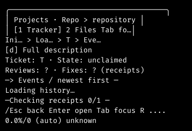
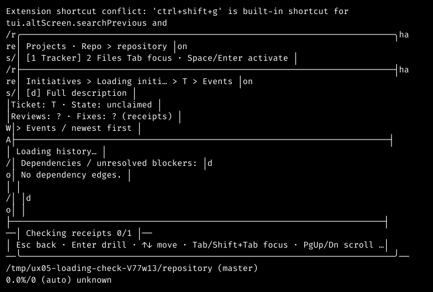
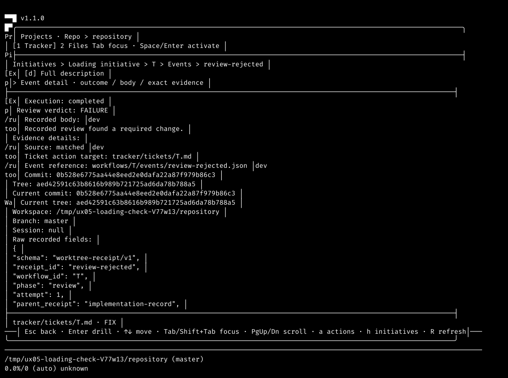
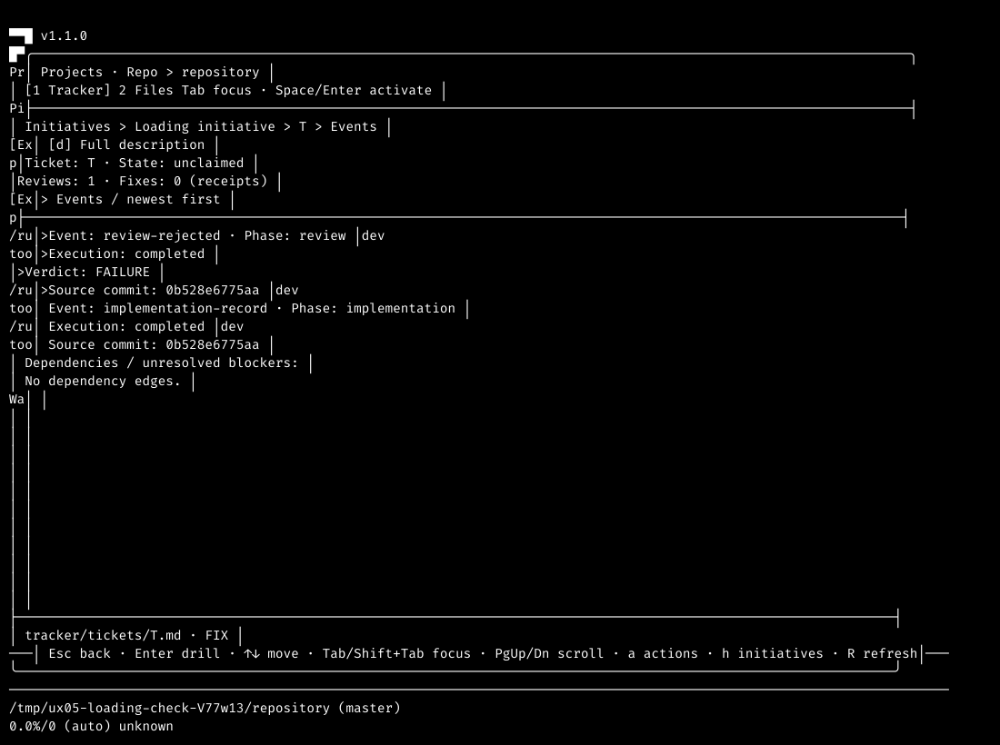

Real Pi event-history acceptance, captured through Termscope on 29 October 2026.
Frozen source eeb4e4f920bc5b556c515c63bb99af60e4a099d9.
This report proves terminal behavior, not ticket completion or integration.
An isolated repository contained canonical ticket T, initiative I and real workflow receipts. Its completed review recorded a FAILURE verdict. A filesystem lock held actual MQ history reads while the modal loaded. No provider prompt or workflow transition was sent.


The companion native result records all six size-and-mode loading observations, not just the two illustrated here.

Semantic check. The harness reads actual rendered execution and verdict fields without requiring incidental label capitalisation. Both modes reported completed execution and FAILURE verdict, with body before extended metadata. Earlier failed harness attempts remain preserved in the workflow.

The list and detail retain the current canonical ticket target. No historical workspace or event reference was used as an action target during this read-only run.
On this unchanged source, the affected suite passed 147 tests with zero failures and 2061 assertions across 12 files. Scoped TypeScript exited zero. The parent acceptance check passed 18 focused tests with 141 assertions. These command results are machine evidence, not screenshot-based claims.
Fresh independent Standards and complete Spec assessments passed. The final independent main assessed all eight changed files and all 13 criteria, reconciled those reports and the completed runtime proof, and saved SUCCESS with no blocking findings. Runtime execution is attributed to the prior main and parent, not falsely claimed as rerun by that final reviewer.
Both colour and monochrome native processes, lock gates and Termscope close operations exited zero. The owned temporary repository was removed and its absence was checked. No provider prompt, real tracker mutation, global configuration change or workflow action occurred.
Every linked companion is copied inside this directory. Captured checkout paths are provenance; replaying the harness requires an appropriate checkout and the recorded tools.